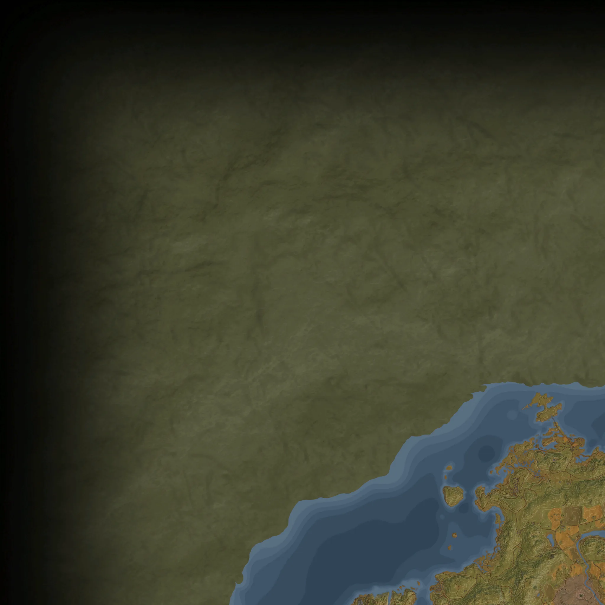
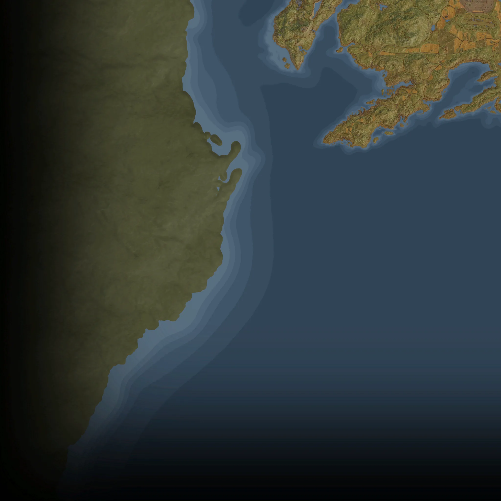
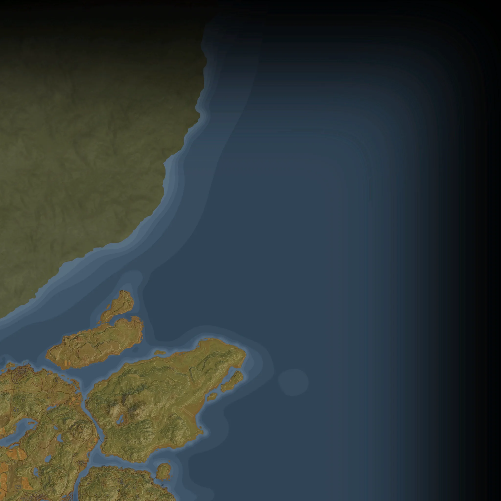
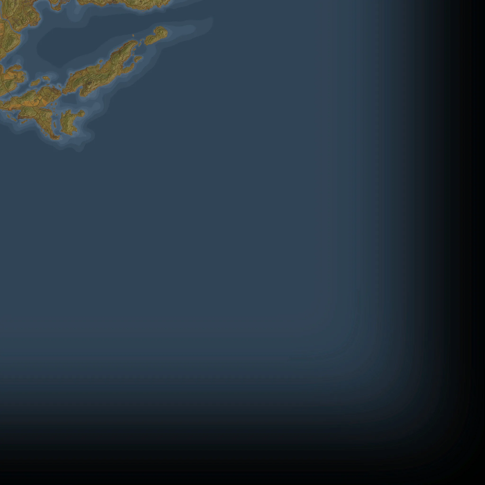

Map48 pickups
The numbers are the # of the list below: hover a pin for its name, click it to jump to it. Open the full map shows only this type on the interactive map; the coordinates in the list open it on that pickup.




All apparel schematicsby region
One section per region; type in the box to search all of them. Nearest location is the closest named place and how far and in which direction the pickup lies from it.
Archipelago4
Show these 4 on the map · About Archipelago
| # | Name | Nearest location | Map (x, z) |
|---|---|---|---|
| 31 | Apparel Schematic Point | at Skarven Bunker | -98, 3115 |
| 42 | Apparel Schematic Point | 70 m N of Vesslan Command Bunker | 1511, 3794 |
| 45 | Apparel Schematic Point | at Stenudden Lighthouse | 1916, 4665 |
| 46 | Apparel Schematic Point | 153 m SE of Salthamn | 2013, 3132 |
South Coast7
Show these 7 on the map · About South Coast
| # | Name | Nearest location | Map (x, z) |
|---|---|---|---|
| 3 | Apparel Schematic Point | 81 m SW of Hisingafyren Data Center | -5479, 4482 |
| 5 | Apparel Schematic Point | 42 m SE of Lysehamn | -5082, 4568 |
| 6 | Apparel Schematic Point | at Storhögen Camping | -4826, 1792 |
| 9 | Apparel Schematic Point | at Beredskapsförråd 120 | -3721, 3642 |
| 10 | Apparel Schematic Point | at Sävered Radar Mast | -3661, 2726 |
| 14 | Apparel Schematic Point | at Småbåthamnen | -2642, 3591 |
| 19 | Apparel Schematic Point | at Beredskapsförråd 105 | -2343, 2160 |
Farmlands7
Show these 7 on the map · About Farmlands
| # | Name | Nearest location | Map (x, z) |
|---|---|---|---|
| 18 | Apparel Schematic Point | at Sandbo | -2350, 1385 |
| 25 | Apparel Schematic Point | at Västra Mark | -1313, -1628 |
| 26 | Apparel Schematic Point | 188 m E of Guldängen Control Point | -1127, -2427 |
| 27 | Apparel Schematic Point | at Lilla Dyrbo | -1060, -411 |
| 28 | Apparel Schematic Point | 258 m SW of Skogshult | -520, 1624 |
| 30 | Apparel Schematic Point | 453 m N of Glättra | -360, 926 |
| 32 | Apparel Schematic Point | 65 m N of Österviks Industriområde | 595, -508 |
Forest7
Show these 7 on the map · About Forest
| # | Name | Nearest location | Map (x, z) |
|---|---|---|---|
| 36 | Apparel Schematic Point | at Mountain bunker "Vargen" | 987, -964 |
| 37 | Apparel Schematic Point | 95 m NE of Tornberget | 1038, 375 |
| 38 | Apparel Schematic Point | at Anl 129 Viggohem | 1118, -1778 |
| 40 | Apparel Schematic Point | 114 m N of Östervik Gamla Stan | 1331, -234 |
| 41 | Apparel Schematic Point | at Beredskapsförråd 119 | 1436, -574 |
| 47 | Apparel Schematic Point | 47 m W of Hjortqvarns Sågverk | 2674, -1257 |
| 48 | Apparel Schematic Point | at Beredskapsförråd 107 | 2852, -2199 |
Mountains9
Show these 9 on the map · About Mountains
| # | Name | Nearest location | Map (x, z) |
|---|---|---|---|
| 1 | Apparel Schematic Point | 1,984 m W of Närkudden | -7254, 1126 |
| 2 | Apparel Schematic Point | 1,385 m W of Närkudden | -6648, 280 |
| 4 | Apparel Schematic Point | 46 m S of Närkudden | -5337, 720 |
| 7 | Apparel Schematic Point | at Muskudden Logement | -4734, 337 |
| 8 | Apparel Schematic Point | 50 m NE of Beredskapsförråd 123 | -3953, -622 |
| 11 | Apparel Schematic Point | 61 m E of Rusaberget Lookout Point | -2953, 1270 |
| 15 | Apparel Schematic Point | at Granhöjden | -2587, -376 |
| 20 | Apparel Schematic Point | at Gretebo | -2214, -1193 |
| 22 | Apparel Schematic Point | at Hjortmon | -1727, -546 |
Marshlands7
Show these 7 on the map · About Marshlands
| # | Name | Nearest location | Map (x, z) |
|---|---|---|---|
| 12 | Apparel Schematic Point | 42 m S of Klinthytta | -2917, -2017 |
| 13 | Apparel Schematic Point | at Karl-Erik Lighthouse | -2910, -3708 |
| 16 | Apparel Schematic Point | at Borgakulan | -2423, -4153 |
| 17 | Apparel Schematic Point | 139 m N of Norrmyra Artillery Base | -2420, -3213 |
| 21 | Apparel Schematic Point | at Ramsboda | -1943, -2223 |
| 23 | Apparel Schematic Point | 114 m SW of Skvadern Command Bunker | -1540, -3164 |
| 24 | Apparel Schematic Point | 321 m NE of Landing Zone: Anya | -1375, -4979 |
North Coast7
Show these 7 on the map · About North Coast
| # | Name | Nearest location | Map (x, z) |
|---|---|---|---|
| 29 | Apparel Schematic Point | at Burgaskogen | -422, -3082 |
| 33 | Apparel Schematic Point | 147 m N of Hagaboda | 631, -4322 |
| 34 | Apparel Schematic Point | at Kopparstugan | 648, -2636 |
| 35 | Apparel Schematic Point | 284 m N of Helgaryd | 954, -2576 |
| 39 | Apparel Schematic Point | 108 m W of Töfta Camping | 1230, -4196 |
| 43 | Apparel Schematic Point | 52 m SW of St. Anna Church | 1574, -3328 |
| 44 | Apparel Schematic Point | at Viskandets Borg | 1852, -3945 |
What the points buy23 schematics
Apparel Schematic Points. The game's own text: Found as loot when defeating Rivals.
The apparel tree has 23 schematics (115 ranks); buying every rank costs 552 Apparel Schematic Points. See the schematics page for the cost of each rank, recipes and prerequisites.